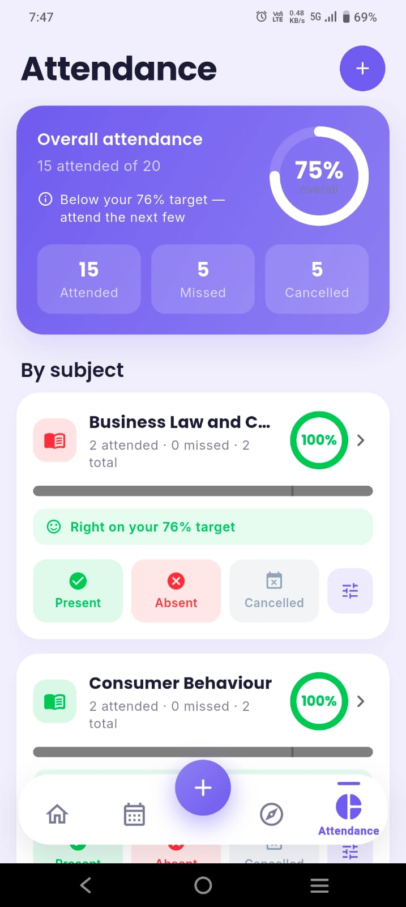

Quick answer
Your first month abroad decides how the rest of the year goes. In week 1, handle the non-negotiables: immigration or residence registration, student ID, SIM card, bank account, health registration and course enrolment. In week 2, learn how your classes and assessments work. In weeks 3–4, build routines and friendships before loneliness sets in. Above all, go to class — in the UK, US, Australia, Canada and many other countries, attendance or full-time study is a condition of your student visa. Use the 30-day checklist to track it all.
UNESCO counts about 7.3 million students studying outside their home country — more than three times as many as in 2000. They move in every direction: from Nigeria to the UK, India to Canada, China to Australia, Brazil to Portugal, the US to Spain, Vietnam to Japan, Germany to the Netherlands. The paperwork differs by country, but the first-month challenges are remarkably similar everywhere. This guide covers what's universal, and tells you exactly where to check the rules for your destination.
Week 1: the non-negotiables
These tasks unlock everything else — you often can't open a bank account without an address, or start a job without an ID number. Do them in roughly this order:
- Immigration or residence registration. Many countries require you to register within days or weeks of arrival — for example registering your address in Germany (Anmeldung), collecting a residence card, or checking in with your university's international office so it can confirm you've arrived.
- Student ID and university accounts. Your student email, learning platform (Canvas, Moodle, Blackboard or similar) and library access.
- Local SIM or eSIM. A local number is needed for banks, two-factor codes, housing and jobs.
- Bank account. Most universities have a letter or partner bank for international students. Until then, a low-fee multi-currency card avoids heavy exchange fees.
- Health. Confirm your health insurance is active (several countries require it for your visa) and register with a doctor or the campus health centre before you get sick.
- Enrolment and timetable. Make sure you're fully enrolled in every course and have your final timetable — rooms, times and online links.
- Emergency info. Save the local emergency number, campus security, the international student office and your embassy or consulate.
Shortcut: take a photo of your timetable and let ClassTrack's AI build your weekly schedule with reminders in seconds — so you're not hunting for room numbers in a new campus during week one.
Visa rules that catch students out
Most student visas aren't just permission to be in the country — they're permission to study. Falling behind can put your status at risk. Common conditions include:
| Country | The rule to know | Official source |
|---|---|---|
| United Kingdom | Universities must monitor Student visa holders' attendance and engagement and report students who stop engaging. Work limit: usually 20 h/week in term. | GOV.UK |
| United States | F-1 students must keep a full course of study (usually 12+ credit hours a semester for undergraduates). On-campus work: up to 20 h/week while school is in session. | Study in the States |
| Canada | You must stay enrolled and actively pursue your studies. Off-campus work: up to 24 h/week in term for eligible full-time students. | IRCC |
| Australia | You must stay enrolled and maintain satisfactory course progress. Work: 48 hours per fortnight while your course is in session. | Home Affairs |
| Germany | Register your address and apply for a residence permit before your entry visa expires. Work: 140 full or 280 half days a year (or up to 20 h/week). | Make it in Germany |
Rules change often — the figures above were checked against official pages in October 2026. Your university's international student office is the best place to confirm what applies to you. For work limits in 20+ countries, see our guide to working while studying.
The simplest protection: track your own attendance from day one. If you fall ill or miss classes, you'll have a record and can talk to your university early, before it becomes a problem. The attendance calculator shows where you stand.

Week 2: how classes work abroad
Academic culture can be the biggest surprise. What earned top marks at home may not work in your new system. In week two, read every course handbook or syllabus and look for these:
- How you're assessed. Many universities use continuous assessment — essays, quizzes, labs, presentations and participation — rather than one final exam. Write every deadline into your planner now.
- Participation counts. In the US, Canada, the Netherlands and others, speaking in seminars can be part of your grade. Silence may be read as disengagement, not respect.
- Academic integrity. Rules on plagiarism, referencing, group work and AI tools are often strict and enforced with software. Learn the referencing style (APA, Harvard, MLA…) and your university's AI policy before your first assignment.
- Office hours are for you. Professors and tutors set aside time for students. Using it is normal and expected — not a sign of weakness.
- More independent study. Expect reading and preparation outside class. A rough guide in many systems is two hours of self-study for every hour in class. See how many hours to study a day.
- A different grading scale. A 65% might be excellent in the UK and average elsewhere. Our guide to converting grades across countries explains why.
Money: banking, budgets and scams
- Budget in the local currency. Converting every price back to your home currency is stressful and misleading. Set a weekly budget in local money. Our student budgeting guide has a simple 50/30/20 method.
- Expect setup costs. Deposits, bedding, kitchen items, transport cards and textbooks hit in the first month. Keep a buffer.
- Get your student discounts. Transport passes, software and streaming are often heavily discounted for students — see our best student discounts.
- Watch for scams targeting international students. Common ones: fake landlords asking for a deposit before a viewing, and callers pretending to be immigration, police or tax officials who demand urgent payment. Real agencies don't ask for payment in gift cards or crypto. When in doubt, hang up and call your international office.
Weeks 3–4: culture shock and loneliness
The classic model of culture shock, from anthropologist Kalervo Oberg (1960), describes four stages: a honeymoon, a crisis, recovery and adjustment. It's a useful map, but real life is messier. A longitudinal study of international students found that adjustment problems were greatest right at the start and eased over the following months, rather than following a neat U-curve (Ward et al., 1998). In other words: if the first weeks feel hard, that's normal — and it usually gets better.
Loneliness is the other big one. In interviews with 200 international students in Australia, about two-thirds said they had experienced loneliness or isolation (Sawir et al., 2008). It isn't a personal failing; it's a predictable part of moving.
What helps most:
- Say yes early. Orientation events and first-week socials are the easiest time to meet people — everyone is new.
- Join one regular thing. A society, sports team, faith group or volunteering slot. Friendships grow from repeated contact, not one big party.
- Mix circles. Friends from home or your own country are a great comfort; local and other international friends help you settle and improve your language.
- Fix a call time with home. Time zones make random calls hard. A regular slot keeps you connected without disrupting your sleep.
- Protect the basics. Sleep, real meals and daylight make a bigger difference to mood than most students expect.
- Use support services. Most universities offer free counselling and international student advisers. If you feel unable to cope, contact them or a local helpline straight away.
Interactive 30-day checklist
First 30 days abroad
Tick items off as you go. Nothing is stored.
Key takeaways
- Week 1 is admin: registration, ID, SIM, bank, health and enrolment — in that order.
- In many countries attendance or full-time study is a visa condition; track your attendance from day one.
- Read every course handbook in week 2: assessments, participation, referencing and AI rules.
- Adjustment is usually hardest at the very start and improves; loneliness affects about two-thirds of international students.
- Join one regular activity early and use your university's support services.
Settle in faster with one app
ClassTrack is a free student app for students around the world. Snap your timetable and it's set up in seconds, track attendance for every subject, keep all deadlines and exams in one place, budget your money, and discover scholarships, internships and student discounts matched to your country.
Get ClassTrack freeFrequently asked questions
What should international students do in their first week?
Can missing classes affect my student visa?
How long does culture shock last?
How do I deal with loneliness as an international student?
How are classes different when you study abroad?
Sources
- UNESCO. Global Convention on Higher Education — 7.3 million students studying abroad.
- Ward, C., Okura, Y., Kennedy, A., & Kojima, T. (1998). The U-curve on trial: a longitudinal study of psychological and sociocultural adjustment during cross-cultural transition. International Journal of Intercultural Relations, 22(3), 277–291.
- Sawir, E., Marginson, S., Deumert, A., Nyland, C., & Ramia, G. (2008). Loneliness and international students: an Australian study. Journal of Studies in International Education, 12(2), 148–180.
- Oberg, K. (1960). Cultural shock: adjustment to new cultural environments. Practical Anthropology, 7, 177–182.
- Official visa pages: GOV.UK Student visa, DHS Study in the States, IRCC, Australian Home Affairs, Make it in Germany (checked October 2026).